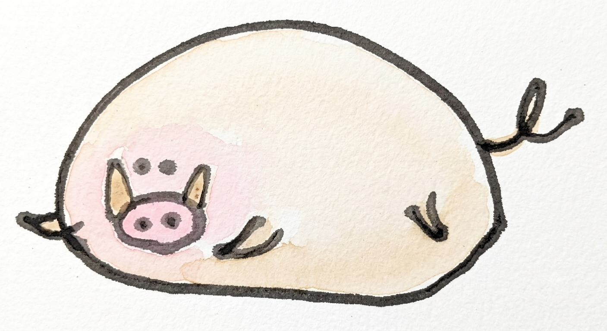
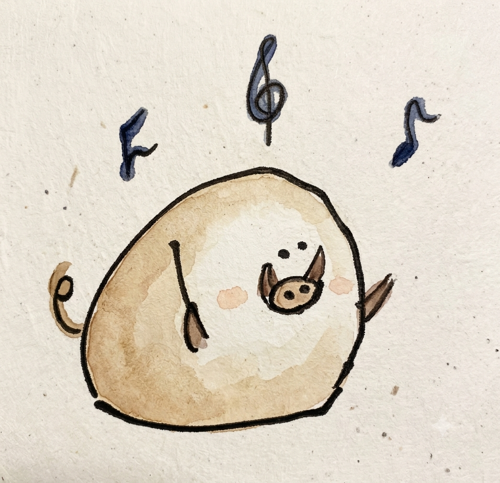
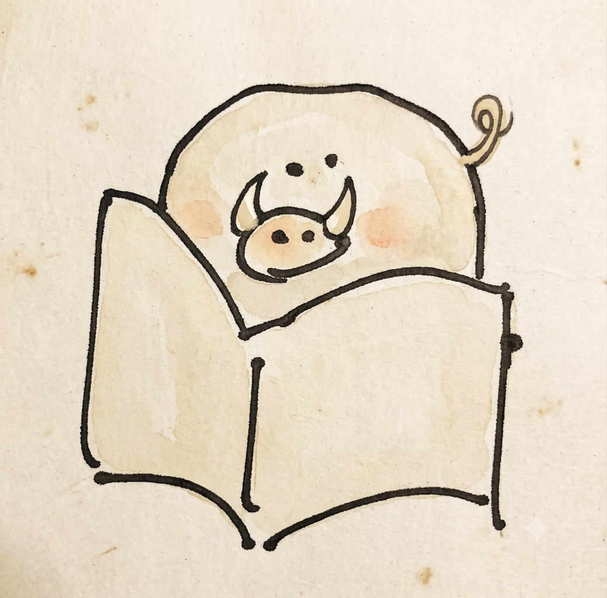

いのころもち とは
もちもち、ころころ。
ふしぎな、いのししさん。
いのころもちは、どこからともなくやってきた、まんまるでもちもちのいのしし。
かつては野山を駆けまわる野生の血が流れていた……はずなのですが、その俊敏さはとうの昔にどこかへ転がっていってしまいました。
あまりにころころしすぎて、手足はもはや地面に届かず。
歩くというより、ころがる。走るというより、ぽよんぽよん。
そんなおちゃめな姿が、周りのみんなをほっこりさせてくれます。
今はまったりのんびり暮らしながら、気になることには首をつっこむ好奇心旺盛な一面も。
ニュースを届けたり、音楽を奏でたり、歴史の世界を旅したり——
いのころもちの「気になる！」が、このサイトのすべてのはじまりです。
いろんな いのころもち
いのころもち

いのころもち

いのころもち

いのころもち